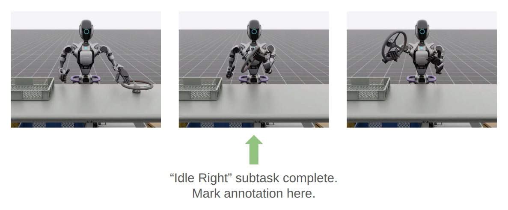

Examples: Data Generation and Imitation Learning for Humanoids#
This page covers data generation and imitation learning workflows for humanoid robots (GR-1, G1) with Isaac Lab Mimic:
Demo 1: Data generation and policy training for a humanoid robot (GR-1 pick and place)
Demo 2: Visuomotor policy for a humanoid robot (GR-1 nut pouring)
Demo 3: Data generation and policy training for humanoid robot locomanipulation (Unitree G1)
Important
Complete the tutorial in Teleoperation and Imitation Learning with Isaac Lab Mimic before proceeding with the following demonstrations to understand the data collection, annotation, and generation steps of Isaac Lab Mimic.
Demo 1: Data Generation and Policy Training for a Humanoid Robot#

Isaac Lab Mimic supports data generation for robots with multiple end effectors. In the following demonstration, we will show how to generate data to train a Fourier GR-1 humanoid robot to perform a pick and place task.
Optional: Collect and annotate demonstrations#
Collect human demonstrations#
Note
Data collection for the GR-1 humanoid robot environment requires use of an Apple Vision Pro headset. If you do not have access to an Apple Vision Pro, you may skip this step and continue on to the next step: Generate the dataset. A pre-recorded annotated dataset is provided in the next step.
Tip
The GR1 scene utilizes the wrist poses from the Apple Vision Pro (AVP) as setpoints for a differential IK controller (Pink-IK). The differential IK controller requires the user’s wrist pose to be close to the robot’s initial or current pose for optimal performance. Rapid movements of the user’s wrist may cause it to deviate significantly from the goal state, which could prevent the IK controller from finding the optimal solution. This may result in a mismatch between the user’s wrist and the robot’s wrist. You can increase the gain of all the Pink-IK controller’s FrameTasks to track the AVP wrist poses with lower latency. However, this may lead to more jerky motion. Separately, the finger joints of the robot are retargeted to the user’s finger joints using the dex-retargeting library.
Set up the CloudXR Runtime and Apple Vision Pro for teleoperation by following the steps in Setting up Isaac Teleop with CloudXR. CPU simulation is used in the following steps for better XR performance when running a single environment.
Collect a set of human demonstrations. A success demo requires the object to be placed in the bin and for the robot’s right arm to be retracted to the starting position.
The Isaac Lab Mimic Env GR-1 humanoid robot is set up such that the left hand has a single subtask, while the right hand has two subtasks. The first subtask involves the right hand remaining idle while the left hand picks up and moves the object to the position where the right hand will grasp it. This setup allows Isaac Lab Mimic to interpolate the right hand’s trajectory accurately by using the object’s pose, especially when poses are randomized during data generation. Therefore, avoid moving the right hand while the left hand picks up the object and brings it to a stable position.


Left: A good human demonstration with smooth and steady motion. Right: A bad demonstration with jerky and exaggerated motion.
Collect five demonstrations by running the following command:
./isaaclab.sh -p scripts/tools/record_demos.py \
--task Isaac-PickPlace-GR1T2-Abs-v0 \
--visualizer kit \
--device cpu \
--num_demos 5 \
--dataset_file ./datasets/dataset_gr1.hdf5
Note
We also provide a GR-1 pick and place task with waist degrees-of-freedom enabled Isaac-PickPlace-GR1T2-WaistEnabled-Abs-v0 (see Available Environments for details on the available environments, including the GR1 Waist Enabled variant). The same command above applies but with the task name changed to Isaac-PickPlace-GR1T2-WaistEnabled-Abs-v0.
Tip
If a demo fails during data collection, the environment can be reset using the teleoperation controls panel in the XR teleop client on the Apple Vision Pro or via voice control by saying “reset”. See Teleoperate with Apple Vision Pro for more details.
The robot uses simplified collision meshes for physics calculations that differ from the detailed visual meshes displayed in the simulation. Due to this difference, you may occasionally observe visual artifacts where parts of the robot appear to penetrate other objects or itself, even though proper collision handling is occurring in the physics simulation.
You can replay the collected demonstrations by running the following command:
./isaaclab.sh -p scripts/tools/replay_demos.py \
--task Isaac-PickPlace-GR1T2-Abs-v0 \
--visualizer kit \
--device cpu \
--dataset_file ./datasets/dataset_gr1.hdf5
Note
Non-determinism may be observed during replay as physics in IsaacLab are not determimnistically reproducible when using env.reset.
Annotate the demonstrations#
Unlike the Franka stacking task, the GR-1 pick and place task uses manual annotation to define subtasks.
The pick and place task has one subtask for the left arm (pick) and two subtasks for the right arm (idle, place). Annotations denote the end of a subtask. For the pick and place task, this means there are no annotations for the left arm and one annotation for the right arm (the end of the final subtask is always implicit).
Each demo requires a single annotation between the first and second subtask of the right arm. This annotation (“S” button press) should be done when the right robot arm finishes the “idle” subtask and begins to move towards the target object. An example of a correct annotation is shown below:
{kind=link}

Annotate the demonstrations by running the following command:
./isaaclab.sh -p scripts/imitation_learning/isaaclab_mimic/annotate_demos.py \
--task Isaac-PickPlace-GR1T2-Abs-Mimic-v0 \
--visualizer kit \
--device cpu \
--input_file ./datasets/dataset_gr1.hdf5 \
--output_file ./datasets/dataset_annotated_gr1.hdf5
Note
The script prints the keyboard commands for manual annotation and the current subtask being annotated:
Annotating episode #0 (demo_0)
Playing the episode for subtask annotations for eef "right".
Subtask signals to annotate:
- Termination: ['idle_right']
Press "N" to begin.
Press "B" to pause.
Press "S" to annotate subtask signals.
Press "Q" to skip the episode.
Tip
If the object does not get placed in the bin during annotation, you can press “N” to replay the episode and annotate again. Or you can press “Q” to skip the episode and annotate the next one.
Generate the dataset#
If you skipped the prior collection and annotation step, download the pre-recorded annotated dataset dataset_annotated_gr1.hdf5 from
here: [Annotated GR1 Dataset].
Place the file under IsaacLab/datasets and run the following command to generate a new dataset with 1000 demonstrations.
./isaaclab.sh -p scripts/imitation_learning/isaaclab_mimic/generate_dataset.py \
--device cpu \
--headless \
--num_envs 20 \
--generation_num_trials 1000 \
--input_file ./datasets/dataset_annotated_gr1.hdf5 \
--output_file ./datasets/generated_dataset_gr1.hdf5
Train a policy#
Use Robomimic to train a policy for the generated dataset.
./isaaclab.sh -p scripts/imitation_learning/robomimic/train.py \
--task Isaac-PickPlace-GR1T2-Abs-v0 \
--algo bc \
--normalize_training_actions \
--dataset ./datasets/generated_dataset_gr1.hdf5
The training script will normalize the actions in the dataset to the range [-1, 1].
The normalization parameters are saved in the model directory under PATH_TO_MODEL_DIRECTORY/logs/normalization_params.txt.
Record the normalization parameters for later use in the visualization step.
Note
By default the trained models and logs will be saved to IssacLab/logs/robomimic.
Visualize the results#
Visualize the results of the trained policy by running the following command, using the normalization parameters recorded in the prior training step:
./isaaclab.sh -p scripts/imitation_learning/robomimic/play.py \
--task Isaac-PickPlace-GR1T2-Abs-v0 \
--visualizer kit \
--device cpu \
--num_rollouts 50 \
--horizon 400 \
--norm_factor_min <NORM_FACTOR_MIN> \
--norm_factor_max <NORM_FACTOR_MAX> \
--checkpoint /PATH/TO/desired_model_checkpoint.pth
Note
Change the NORM_FACTOR in the above command with the values generated in the training step.
Tip
If you don’t see expected performance results: It is critical to test policies from various checkpoint epochs. Performance can vary significantly between epochs, and the best-performing checkpoint is often not the final one.

The trained policy performing the pick and place task in Isaac Lab.#
Note
Expected Success Rates and Timings for Pick and Place GR1T2 Task
Success rate for data generation depends on the quality of human demonstrations (how well the user performs them) and dataset annotation quality. Both data generation and downstream policy success are sensitive to these factors and can show high variance. See Common Pitfalls when Generating Data for tips to improve your dataset.
Data generation success for this task is typically 65-80% over 1000 demonstrations, taking 18-40 minutes depending on GPU hardware and success rate (19 minutes on a RTX ADA 6000 @ 80% success rate).
Behavior Cloning (BC) policy success is typically 75-86% (evaluated on 50 rollouts) when trained on 1000 generated demonstrations for 2000 epochs (default), depending on demonstration quality. Training takes approximately 29 minutes on a RTX ADA 6000.
Recommendation: Train for 2000 epochs with 1000 generated demonstrations, and evaluate multiple checkpoints saved between the 1000th and 2000th epochs to select the best-performing policy. Testing various epochs is essential for finding optimal performance.
Demo 2: Visuomotor Policy for a Humanoid Robot#

Download the Dataset#
Download the pre-generated dataset from here and place it under IsaacLab/datasets/generated_dataset_gr1_nut_pouring.hdf5
(Note: The dataset size is approximately 15GB). The dataset contains 1000 demonstrations of a humanoid robot performing a pouring/placing task that was
generated using Isaac Lab Mimic for the Isaac-NutPour-GR1T2-Pink-IK-Abs-Mimic-v0 task.
Hint
If desired, data collection, annotation, and generation can be done using the same commands as the prior examples.
The robot first picks up the red beaker and pours the contents into the yellow bowl. Then, it drops the red beaker into the blue bin. Lastly, it places the yellow bowl onto the white scale. See the video in the Visualize the results section below for a visual demonstration of the task.
The success criteria for this task requires the red beaker to be placed in the blue bin, the green nut to be in the yellow bowl, and the yellow bowl to be placed on top of the white scale.
Attention
The following commands are only for your reference and are not required for this demo.
To collect demonstrations:
./isaaclab.sh -p scripts/tools/record_demos.py \
--task Isaac-NutPour-GR1T2-Pink-IK-Abs-v0 \
--visualizer kit \
--device cpu \
--num_demos 5 \
--dataset_file ./datasets/dataset_gr1_nut_pouring.hdf5
To annotate the demonstrations:
./isaaclab.sh -p scripts/imitation_learning/isaaclab_mimic/annotate_demos.py \
--task Isaac-NutPour-GR1T2-Pink-IK-Abs-Mimic-v0 \
--visualizer kit \
--enable_cameras \
--device cpu \
--input_file ./datasets/dataset_gr1_nut_pouring.hdf5 \
--output_file ./datasets/dataset_annotated_gr1_nut_pouring.hdf5
Warning
There are multiple right eef annotations for this task. Annotations for subtasks for the same eef cannot have the same action index. Make sure to annotate the right eef subtasks with different action indices.
To generate the dataset:
./isaaclab.sh -p scripts/imitation_learning/isaaclab_mimic/generate_dataset.py \
--task Isaac-NutPour-GR1T2-Pink-IK-Abs-Mimic-v0 \
--visualizer kit \
--enable_cameras \
--device cpu \
--headless \
--generation_num_trials 1000 \
--num_envs 5 \
--input_file ./datasets/dataset_annotated_gr1_nut_pouring.hdf5 \
--output_file ./datasets/generated_dataset_gr1_nut_pouring.hdf5
Train a policy#
Use Robomimic to train a visuomotor BC agent for the task.
./isaaclab.sh -p scripts/imitation_learning/robomimic/train.py \
--task Isaac-NutPour-GR1T2-Pink-IK-Abs-v0 \
--algo bc \
--normalize_training_actions \
--dataset ./datasets/generated_dataset_gr1_nut_pouring.hdf5
The training script will normalize the actions in the dataset to the range [-1, 1].
The normalization parameters are saved in the model directory under PATH_TO_MODEL_DIRECTORY/logs/normalization_params.txt.
Record the normalization parameters for later use in the visualization step.
Note
By default the trained models and logs will be saved to IsaacLab/logs/robomimic.
You can also post-train a GR00T foundation model to deploy a Vision-Language-Action policy for the task.
Please refer to the IsaacLabEvalTasks repository for more details.
Visualize the results#
Visualize the results of the trained policy by running the following command, using the normalization parameters recorded in the prior training step:
./isaaclab.sh -p scripts/imitation_learning/robomimic/play.py \
--task Isaac-NutPour-GR1T2-Pink-IK-Abs-v0 \
--visualizer kit \
--device cpu \
--enable_cameras \
--num_rollouts 50 \
--horizon 350 \
--norm_factor_min <NORM_FACTOR_MIN> \
--norm_factor_max <NORM_FACTOR_MAX> \
--checkpoint /PATH/TO/desired_model_checkpoint.pth
Note
Change the NORM_FACTOR in the above command with the values generated in the training step.
Tip
If you don’t see expected performance results: Test policies from various checkpoint epochs, not just the final one. Policy performance can vary substantially across training, and intermediate checkpoints often yield better results.
The trained visuomotor policy performing the pouring task in Isaac Lab.#
Note
Expected Success Rates and Timings for Visuomotor Nut Pour GR1T2 Task
Success rate for data generation depends on the quality of human demonstrations (how well the user performs them) and dataset annotation quality. Both data generation and downstream policy success are sensitive to these factors and can show high variance. See Common Pitfalls when Generating Data for tips to improve your dataset.
Data generation for 1000 demonstrations takes approximately 10 hours on a RTX ADA 6000.
Behavior Cloning (BC) policy success is typically 50-60% (evaluated on 50 rollouts) when trained on 1000 generated demonstrations for 600 epochs (default). Training takes approximately 15 hours on a RTX ADA 6000.
Recommendation: Train for 600 epochs with 1000 generated demonstrations, and evaluate multiple checkpoints saved between the 300th and 600th epochs to select the best-performing policy. Testing various epochs is critical for achieving optimal performance.
Demo 3: Data Generation and Policy Training for Humanoid Robot Locomanipulation with Unitree G1#
In this demo, we showcase the integration of locomotion and manipulation capabilities within a single humanoid robot system. This locomanipulation environment enables data collection for complex tasks that combine navigation and object manipulation. The demonstration follows a multi-step process: first, it generates pick and place tasks similar to Demo 1, then introduces a navigation component that uses specialized scripts to generate scenes where the humanoid robot must move from point A to point B. The robot picks up an object at the initial location (point A) and places it at the target destination (point B).

Note
Locomotion policy training
The locomotion policy used in this integration example was trained using the AGILE framework. AGILE is an officially supported humanoid control training pipeline that leverages the manager based environment in Isaac Lab. It will also be seamlessly integrated with other evaluation and deployment tools across Isaac products. This allows teams to rely on a single, maintained stack covering all necessary infrastructure and tooling for policy training, with easy export to real-world deployment. The AGILE repository contains updated pre-trained policies with separate upper and lower body policies for flexibtility. They have been verified in the real world and can be directly deployed. Users can also train their own locomotion or whole-body control policies using the AGILE framework.
Generate the manipulation dataset#
The same data generation and policy training steps from Demo 1 can be applied to the G1 humanoid robot with locomanipulation capabilities. This demonstration shows how to train a G1 robot to perform pick and place tasks with full-body locomotion and manipulation.
The process follows the same workflow as Demo 1, but uses the Isaac-PickPlace-Locomanipulation-G1-Abs-v0 task environment.
Follow the same data collection, annotation, and generation process as demonstrated in Demo 1, but adapted for the G1 locomanipulation task.
Hint
If desired, data collection and annotation can be done using the same commands as the prior examples for validation of the dataset.
The G1 robot with locomanipulation capabilities combines full-body locomotion with manipulation to perform pick and place tasks.
Note that the following commands are only for your reference and dataset validation purposes - they are not required for this demo.
To collect demonstrations:
./isaaclab.sh -p scripts/tools/record_demos.py \
--device cpu \
--task Isaac-PickPlace-Locomanipulation-G1-Abs-v0 \
--dataset_file ./datasets/dataset_g1_locomanip.hdf5 \
--num_demos 5
Note
Depending on how the Apple Vision Pro app was initialized, the hands of the operator might be very far up or far down compared to the hands of the G1 robot. If this is the case, you can click Stop AR in the AR tab in Isaac Lab, and move the AR Anchor prim. Adjust it down to bring the hands of the operator lower, and up to bring them higher. Click Start AR to resume teleoperation session. Make sure to match the hands of the robot before clicking Play in the Apple Vision Pro, otherwise there will be an undesired large force generated initially.
You can replay the collected demonstrations by running:
./isaaclab.sh -p scripts/tools/replay_demos.py \
--device cpu \
--task Isaac-PickPlace-Locomanipulation-G1-Abs-v0 \
--dataset_file ./datasets/dataset_g1_locomanip.hdf5
To annotate the demonstrations:
./isaaclab.sh -p scripts/imitation_learning/isaaclab_mimic/annotate_demos.py \
--device cpu \
--task Isaac-Locomanipulation-G1-Abs-Mimic-v0 \
--input_file ./datasets/dataset_g1_locomanip.hdf5 \
--output_file ./datasets/dataset_annotated_g1_locomanip.hdf5
If you skipped the prior collection and annotation step, download the pre-recorded annotated dataset dataset_annotated_g1_locomanip.hdf5 from
here: [Annotated G1 Dataset].
Place the file under IsaacLab/datasets and run the following command to generate a new dataset with 1000 demonstrations.
./isaaclab.sh -p scripts/imitation_learning/isaaclab_mimic/generate_dataset.py \
--device cpu --headless --num_envs 20 --generation_num_trials 1000 \
--input_file ./datasets/dataset_annotated_g1_locomanip.hdf5 --output_file ./datasets/generated_dataset_g1_locomanip.hdf5
Train a manipulation-only policy#
At this point you can train a policy that only performs manipulation tasks using the generated dataset:
./isaaclab.sh -p scripts/imitation_learning/robomimic/train.py \
--task Isaac-PickPlace-Locomanipulation-G1-Abs-v0 --algo bc \
--normalize_training_actions \
--dataset ./datasets/generated_dataset_g1_locomanip.hdf5
Visualize the results#
Visualize the trained policy performance:
./isaaclab.sh -p scripts/imitation_learning/robomimic/play.py \
--device cpu \
--task Isaac-PickPlace-Locomanipulation-G1-Abs-v0 \
--num_rollouts 50 \
--horizon 400 \
--norm_factor_min <NORM_FACTOR_MIN> \
--norm_factor_max <NORM_FACTOR_MAX> \
--checkpoint /PATH/TO/desired_model_checkpoint.pth
Note
Change the NORM_FACTOR in the above command with the values generated in the training step.
Tip
If you don’t see expected performance results: Always test policies from various checkpoint epochs. Different epochs can produce significantly different results, so evaluate multiple checkpoints to find the optimal model.
The trained policy performing the pick and place task in Isaac Lab.#
Note
Expected Success Rates and Timings for Locomanipulation Pick and Place Task
Success rate for data generation depends on the quality of human demonstrations (how well the user performs them) and dataset annotation quality. Both data generation and downstream policy success are sensitive to these factors and can show high variance. See Common Pitfalls when Generating Data for tips to improve your dataset.
Data generation success for this task is typically 65-82% over 1000 demonstrations, taking 18-40 minutes depending on GPU hardware and success rate (18 minutes on a RTX ADA 6000 @ 82% success rate).
Behavior Cloning (BC) policy success is typically 75-85% (evaluated on 50 rollouts) when trained on 1000 generated demonstrations for 2000 epochs (default), depending on demonstration quality. Training takes approximately 40 minutes on a RTX ADA 6000.
Recommendation: Train for 2000 epochs with 1000 generated demonstrations, and evaluate multiple checkpoints saved between the 1000th and 2000th epochs to select the best-performing policy. Testing various epochs is essential for finding optimal performance.
Generate the dataset with manipulation and point-to-point navigation#
To create a comprehensive locomanipulation dataset that combines both manipulation and navigation capabilities, you can generate a navigation dataset using the manipulation dataset from the previous step as input.

G1 humanoid robot performing locomanipulation with navigation capabilities.#
The locomanipulation dataset generation process takes the previously generated manipulation dataset and creates scenarios where the robot must navigate from one location to another while performing manipulation tasks. This creates a more complex dataset that includes both locomotion and manipulation behaviors.
To generate the locomanipulation dataset, use the following command:
./isaaclab.sh -p \
scripts/imitation_learning/locomanipulation_sdg/generate_data.py \
--device cpu \
--kit_args="--enable isaacsim.replicator.mobility_gen" \
--task="Isaac-G1-SteeringWheel-Locomanipulation" \
--dataset ./datasets/generated_dataset_g1_locomanip.hdf5 \
--num_runs 1 \
--lift_step 60 \
--navigate_step 130 \
--output_file ./datasets/generated_dataset_g1_locomanipulation_sdg.hdf5 \
--enable_cameras \
--randomize_placement \
--visualizer kit
Note
The input dataset (--dataset) should be the manipulation dataset generated in the previous step. You can specify any output filename using the --output_file_name parameter.
The key parameters for locomanipulation dataset generation are:
--lift_step 60: Number of steps for the lifting phase of the manipulation task. This should mark the point immediately after the robot has grasped the object.--navigate_step 130: Number of steps for the navigation phase between locations. This should make the point where the robot has lifted the object and is ready to walk.--output_file: Name of the output dataset file
This process creates a dataset where the robot performs the manipulation task at different locations, requiring it to navigate between points while maintaining the learned manipulation behaviors. The resulting dataset can be used to train policies that combine both locomotion and manipulation capabilities.
Note
You can visualize the robot trajectory results with the following script command:
./isaaclab.sh -p scripts/imitation_learning/locomanipulation_sdg/plot_navigation_trajectory.py --input_file datasets/generated_dataset_g1_locomanipulation_sdg.hdf5 --output_dir /PATH/TO/DESIRED_OUTPUT_DIR
The data generated from this locomanipulation pipeline can also be used to finetune an imitation learning policy using GR00T N1.5. To do this, you may convert the generated dataset to LeRobot format as expected by GR00T N1.5, and then run the finetuning script provided in the GR00T N1.5 repository. An example closed-loop policy rollout is shown in the video below:

Simulation rollout of GR00T N1.5 policy finetuned for locomanipulation.#
The policy shown above uses the camera image, hand poses, hand joint positions, object pose, and base goal pose as inputs. The output of the model is the target base velocity, hand poses, and hand joint positions for the next several timesteps.
Use NuRec Background in Locomanipulation SDG#
The NuRec assets are neural volumes reconstructed from real-world captures. When integrated into the locomanipulation SDG workflow, these assets allow you to generate synthetic data in photorealistic environments that mirror real-world.
You can load your own USD or USDZ file, which must include neural reconstruction for rendering, and a collision mesh to enable physical interaction and be set to invisible.
Pre-constructed assets are available via the PhysicalAI Robotics NuRec dataset. Some of them are captured from a humanoid-viewpoint to match the camera view of the humanoid robot.
For example, when using the asset hand_hold-voyager-babyboom, the relevant files are:
stage.usdz: a USDZ archive that bundles 3D Gaussian splatting (volume.nurec), a collision mesh (mesh.usd), etc.occupancy_map.yamlandoccupancy_map.png: occupancy map for path planning and navigation.
Download the files and place them under <PATH_TO_USD_ASSET>.
Ensure you have the manipulation dataset from the previous step. You can also download a pre-recorded
annotated dataset as in Generate the manipulation dataset
and place it under <DATASET_FOLDER>/dataset_annotated_g1_locomanip.hdf5.
Then run the following command:
./isaaclab.sh -p scripts/imitation_learning/locomanipulation_sdg/generate_data.py \
--device cpu \
--kit_args="--enable isaacsim.replicator.mobility_gen" \
--task="Isaac-G1-SteeringWheel-Locomanipulation" \
--dataset <DATASET_FOLDER>/dataset_annotated_g1_locomanip.hdf5 \
--num_runs 1 \
--lift_step 60 \
--navigate_step 130 \
--enable_pinocchio \
--output_file <DATASET_FOLDER>/generated_dataset_g1_locomanipulation_sdg_with_background.hdf5 \
--enable_cameras \
--visualizer kit \
--background_usd_path <PATH_TO_USD_ASSET>/stage.usdz \
--background_occupancy_yaml_file <PATH_TO_USD_ASSET>/occupancy_map.yaml \
--init_camera_view \
--randomize_placement
The key parameters are:
--background_usd_path: Path to the NuRec USD asset.--background_occupancy_yaml_file: Path to the occupancy map file.--init_camera_view: Set the viewport camera behind the robot at the start of episode.--high_res_video: An optional argument to generate a higher resolution video (540x960) for the ego-centric camera view. Default resolution is 160x256.
On successful task completion, an HDF5 dataset is generated containing camera observations. You can convert
the ego-centric camera view to MP4. If you use --high_res_video during data generation, match the
dimension(540x960) in the command below.
./isaaclab.sh -p scripts/tools/hdf5_to_mp4.py \
--input_file <DATASET_FOLDER>/generated_dataset_g1_locomanipulation_sdg_with_background.hdf5 \
--output_dir <DATASET_FOLDER>/ \
--input_keys robot_pov_cam \
--video_width 256 \
--video_height 160